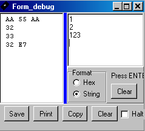

januari 2005
Tuning by RS232
Introduction
Often it's desirable to tune a few parameters at the final location where the circuit is placed (e.g. in case of PID controllers). There are several ways to realize this. You could do it with a few buttons, stepping though a menu and increasing or decreasing the values. Or you could do it with a potmeter connected to one of the analog inputs. As my designs always have somekind of serial interface (either RS232 or USB), combined with the fact that I'm often using a bootloader, serial tuning is a far more comfortable way for tuning.
The method described here, has the following features

Commands
base+0 <index> read value from location <index> of tuning-EEprom (0 = all)
base+0 0 read all values from tuning-EEProm, preceeded by the number of byte, byte2, byte3
base+1 <index> <value> write 1 value to tuning-EEprom (BE CAREFUL, sending 3 or more bytes !!!)
base+2 <index> increment with 1, the value at location <index> of tuning EEprom
base+3 <index> decrement with 1, the value at location <index> of tuning EEprom
base+4 <index> increment with large step, the value at location <index> of tuning EEprom
base+5 <index> decrement with large step, the value at location <index> of tuning EEprom
<index> starts at 1
<value> is either a byte, a byte2 or a byte3, in case of muiltiple bytes, the MSB comes first.
BE CAREFUL when sending more then 2 bytes at once, because only 2 of them might be recognized. So insert pauses !!
When a value in tuning-EEporm is changed, though one of the commands above (either by writing or by incrementing), the flag tuning_EEprom_changed is set, so they main program can decide to load the new values and store them in faster ram. The main program is responsible for clearing the tuning_EEprom_changed flag.
pragma eedata 8,0,5
const tuning_N1 = 3
const tuning_N2 = 0
const tuning_N3 = 0
const short_command = 0
const tuning_command_base = 0x0
const tuning_large_step = 0xF0